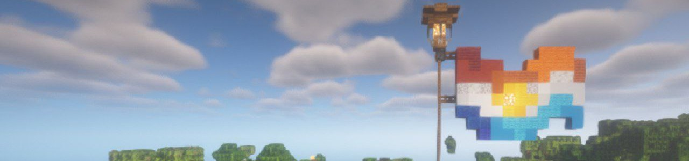

<!DOCTYPE html>
<html lang="ru">

</html>

<head>
    <title>Unburning and Collapse SMP</title>
    <link rel="stylesheet" href="sheet.css">
    <link rel="icon" type="image/x-icon" href="../img/minecraft_logo.ico">
    <meta charset="UTF-8">
    <meta name="viewport" content="width=device-width, initial-scale=1.0">
</head>

<body>

    <div class="header">
        <div class="nav-links" id="navLinks">
            <div class="dropdown">
                <button class="button" onclick="toggleMenu()">&#9776;</button>
                <div class="dropdown-content" id="dropdownMenu">
                    <a href="../chrsheets/soon.html">Кредиты</a>
                    <a href="../index.html#contact">Обратная связь</a>
                    <a href="../chrsheets/soon.html">О нас</a>
                    <a href="../gallery.html">Галерея</a>
                </div>
            </div>

            <a href="../lore.html">Лор</a>
            <a href="../character-bios.html">Анкеты персонажей</a>
            <a href="../index.html">Главная</a>
        </div>
    </div>

    <div class="post">
        

        <h1>Свидание вслепую</h1>

        <p>
            Лёгкий аромат роз и танцующие огоньки свечей, отражающие тени участников, собравшихся в помещении. Сумерки,
            солнечный свет не способен помешать обстановке. С улицы слегка дует едва уловимый ветерок, играясь с листьями
            растений внутри. Романтика? Возможно да, возможно нет. Ведь каждый имеет собственный взгляд на происходящее,
            верно?
            <br><br>
            Свидание вслепую, лорное событие произошедшее сегодня. Смысл понятен из названия, участники не знали какая пара
            им попадётся, что давало возможность сюжетно сблизить персонажей
            <br><br>
            В ивенте поучаствовали: Теруо, Бакстер, Директор, Лекси, Слайм, Морзе.
            <br><br>
            <span style="color:white;">p.s.По некоторым причинам, пары пришлось менять, так что скрины могут не совпадать с
                действительностью.&#92432;⭒๋࣭</span>
        </p>
    </div>

    <script>
        function toggleMenu() {
            const menu = document.getElementById("dropdownMenu");
            menu.style.display = (menu.style.display === "block") ? "none" : "block";
        }

        // Close the dropdown if the user clicks outside of it
        window.onclick = function (event) {
            if (!event.target.matches('.button')) {
                const dropdowns = document.getElementsByClassName("dropdown-content");
                for (let i = 0; i < dropdowns.length; i++) {
                    const openDropdown = dropdowns[i];
                    if (openDropdown.style.display === "block") {
                        openDropdown.style.display = "none";
                    }
                }
            }
        }

    </script>
</body>